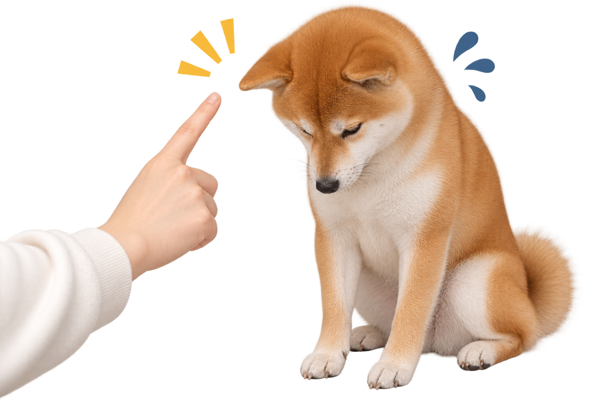

柴犬を飼うには？ 〜 しつけ・心得 〜
しつけのコツとは？
犬を飼うことになったら、まず一番に「しつけってどうすればいいの？」「何をどこまで教えたらいいの？」と悩んでしまいますよね。
しつけはなるべく早いうちから始めた方が、ワンちゃんもスムーズに覚えてくれます。
難しく感じるかもしれませんが、実際、教えることは4つだけで十分です。
「マテ」と「お座り」
どちらもご飯をあげるときに行うのが一番簡単です。
「お座り」と言い聞かせてから座らせ、自分からお座りの体制にならなくてもお座りした時点でしっかり褒めましょう。
「マテ」もご飯を手で覆い、マテと言い聞かせながら止まるという行動を覚えさせましょう。少しでもできたら全力で褒めてあげてください。
すると、「その行動をするだけで褒められる！」とルンルンになり、いつしかできるようになります。
できるようになったら、次はお散歩の止まる時にできるように練習していきましょう。

「ハウス」と「トイレ」
この２つはそこまで難しくないですが、広い心を持たないといけません。
ハウスもトイレもとにかく犬の前で「これはハウス！」「ここがトイレ！」と訴え続けてください。初めの時は、ハウスといっても行動と結び付かず入らなかったり、トイレの場所がよくわからずトイレ以外でしてしまうことが多々あります。してしまったものはしょうがないで済ませるしかありませんが、しっかり叱りましょう。
柴犬のしつけは、柴犬が元々賢いので割とすぐに理解してくれます。
「しつけ」と聞くと、犬を厳しく縛り付けたり、いじめているように感じるかもしれません。しかし、実際は人と犬がお互いにストレスなく、仲良くなるためのルールにすぎません。
だから「しつけ」はネガティブなものではなく、幸せにつながるポジティブな行動なのです。
*叱り方についてはのちに説明が出てきます。
柴犬を飼うための心得とは？
常に舐められないようにする
つい可愛くて甘やかしたくなることがありますが、柴犬は賢いので「こうすればこれが貰えるぜへへ」と考えます。そのため、ある程度人が厳しく接し、叱った方が良いです。
なぜ舐められないことが大切なのか、それは柴犬が人間より立場が上と認識することを防ぐためです。
もしそう認識してしまうと、噛みついていうことを聞かなくなり、凶暴化ししまう可能性があるからです。
叱るという行為は、決して脅すためにあるのではなく、柴犬と仲良く、安心して生活する上で欠かせない要素です。
叱るとは？
叱る場面自体、ここだ！という指標はないです。ただ、叱り方にはいくつかポイントがあります。
①
叱るのは30以内
犬は今起こった現状を覚えているのは約30分と言われています。そのためネチネチずっと怒るのはやめて、その場その瞬間で叱ることが犬も理解しやすいため良いです。
しかし、叱る瞬間、現場に出会う確率の方が低いと思います。
もし、30分以上経った時見つけた場合は、やってしまった現場の隣で犬に向かって「だめ」など否定の言葉を言いましょう。それでも聞かない場合は状況にもよりますが、痛くない程度に鼻を掴むと「ダメ」と理解しやすい傾向がが経験上があるのでおすすめです。
②
手は撫でるためにある
叱ることも大切と言いましたが、手を使って怒るのはやめましょう。
例えば、手で「パン」と大きな音を出す、軽く叩いてしまう（＊あくまで例えです）。私も手で大きな音を出して怒ってしまった事があります。
何がいけないかというと、犬はただでさえ警戒心が強いため、触れること自体が難しく、容易ではない行為です。その上、手が怒られるために使われていると考えると手を恐れ、大きい音にも恐怖を植え付けてしまいます。そのためなるべく口で叱ることをお勧めします。
